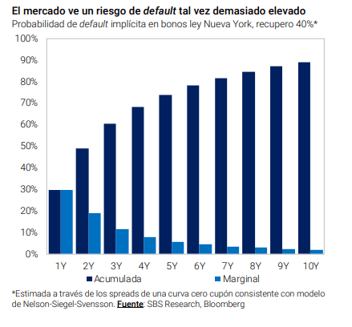
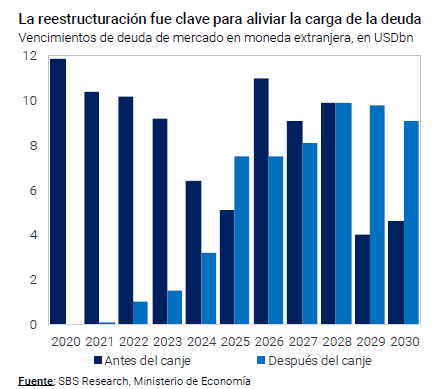
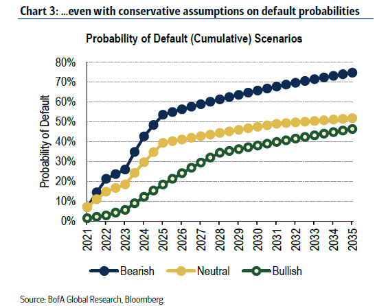

Desconfianza: ven 70% de probabilidades de default hacia el fin del mandato de Fernández
Aún con una carga de deuda baja en los próximos 4 años, el mercado nota riesgos de incumplimiento en los compromisos con acreedores.
La probabilidad de default implícita en los bonos arranca en el 30% para el plazo de 1 año, alcanza el 60% a 3 años

os riesgos de default no se alejan de la deuda argentina, incluso habiendo reestructurado hace menos de un mes. Con un valor
de recupero, la probabilidad de default a 10 años es del 90%.
Dicha probabilidad está relacionada con la falta de un programa
económico consistente que se traducen en el deterioro del precio actual de los bonos. La renta ja local es una de las más riesgosos
del planeta
Desde que salieron a cotizarlos nuevos bonos, la tendencia fue claramente bajista. Con un leve descanso en las últimas ruedas, los bonos
aún acumulan un retroceso del orden del 20%.
Esta caída hizo que las tasas de interés de los mismos pasen de 11% a 16% a la vez que la
curva de deuda muestre una clara pendiente negativa.
Cuando la pendiente de la curva se invierte y los rendimientos de corto plazo terminan siendo más elevados que los de largo plazo
implica que el mercado ve riesgos de algún evento crediticio en el corto plazo.
Por ello es que los bonos con vencimiento más inmediatos
resultan más riesgos y con mayortasa que los de más largo plazo. En este contexto, la probabilidad de default sobre los bonos argentinos
es elevada.
En un análisis elaborado por Adrián Yarde Buller, economista jefe de Grupo SBS remarca que
la probabilidad de que veamos algún
evento crediticio en los próximos 2 años es del 50%, 60% de probabilidad en 3 años y 70% en 4 años, es decir, antes de que termine el
actual Gobierno. A su vez, las chances de ver un default en los próximos 10 años es del 90%, es decir, casi asegurado
“El mercado aún desconfía delsendero económico que eligió Argentina. Los bonos descuentan una probabilidad de default de 60% a 3
años y 90% a 10 (recovery 40%). Se necesitará de otras señales”, advirtió.

La reestructuración de la deuda hizo que el Gobierno no tenga elevados vencimientos de capital e intereses dentro de los próximos 4
años. La carga se de deuda va en ascenso desde 2024 y se vuelve elevada cuando se acercan a 2025 y se mantienen altas hasta 2030.
De alguna manera, el Gobierno, con la actualreestructuración, pateo vencimientos hacia adelante,sin resolver de fondo el problema.
La probabilidad de default está determinada por el hecho de que, si no se logra generar recursos genuinos en la actualidad, el riesgo de
ver un nuevo evento crediticio se mantendrá elevado en los próximos años, y con mayor probabilidad cuando se alcancen dichos
vencimientos.

Los analistas de Bank of America realizaron un análisis sobre el potencial de la deuda argentina y coincidieron en que los riesgos de
default son más elevados justo cuando naliza el actual mandato de Gobierno, a la vez que advirtieron que es esperable que los
inversores mantengan una expectativa elevada sobre los riesgos de default en el mediano plazo.
“Creemos que los inversores seguirán preocupados por los riesgos de incumplimiento durante mucho tiempo. Los riesgos de
incumplimiento de los bonos de ley extranjera son bajos entre 2021 y 2023 debido al muy bajo servicio de la deuda. Creemos que los
riesgos de incumplimiento aumentarán en 2024 y 2025 cuando el servicio de la deuda y las amortizaciones se vuelvan más
signicativos. En los años siguientes, esperamos que los riesgos de incumplimiento continúen aumentando, pero a un ritmo más gradual,
debido a los incrementos secuenciales en elservicio de la deuda. Actualmente, elservicio de la deuda alcanza su punto máximo en 2031”,
señalaron.

Con una visión similar
, Federico Broggi, head de research de Invertir en Bolsa (IEB)
advirtió que las probabilidades de default para un
país que no debe afrontar pagos signicantes hasta dentro de muchos años como Argentina son realmente altas:
"Esto denota una
desconanza muy elevada por parte de los inversores alimentada por la caída de reservas y la incertidumbre que generan sobre el
futuro y la actividad privada las medidas adoptadas por el BCRA hace dos semanas”, comentó
Finalmente
, Fráncico Mattig, estratega de renta ja de Consultatio
entiende que la probabilidad implícita de default parecería exagerada
“El mercado ya prácticamente descuenta que habrá un nuevo evento de default dentro de los próximos 10 años, lo cual luce bastante
exagerado. Incluso si achicamos la ventana de análisis hasta el 2025, año en el cual (a juzgar por el perl de vencimientos) Argentina
requerirá recuperar el acceso a los mercados, la probabilidad acumulada de default es de más del 30%”, dijo Mattig.